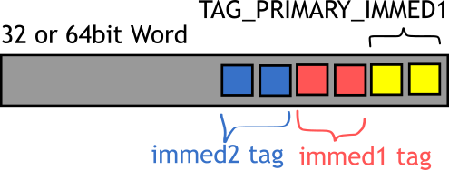
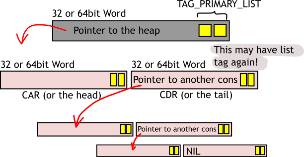
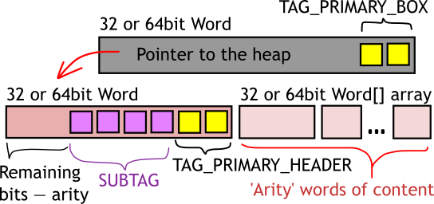
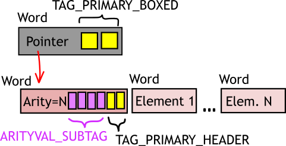
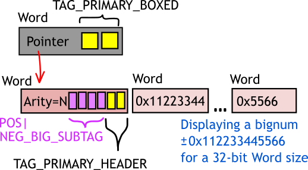
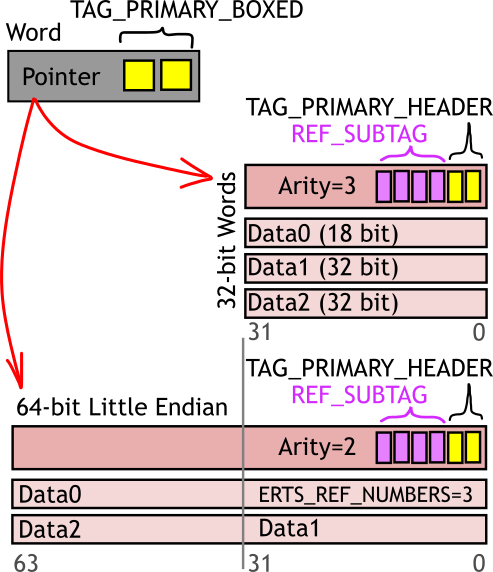
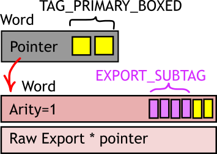

Data Types Memory Layout¶
This describes data format on heap, as seen in C code or from debugger. You will never be able to see this format from Erlang code.
Immediate values¶
{kind=link}
Immediate types always occupy 1 Word. To know if you found
an immediate, its least-significant 2 bits will have value
TAG_PRIMARY_IMMED1=3.
To know which exactly immediate you’ve got, see the two following bits
(bit 2 and 3):
_TAG_IMMED1_PID=0,
_TAG_IMMED1_PORT=1,
_TAG_IMMED1_SMALL=3.
This leaves remaining Word-size minus 4 bits for the
actual value.
If the bits 2 and 3 contained _TAG_IMMED1_IMMED2=2 then two more bits
(bit 4 and 5) are taken and interpreted.
They can be
_TAG_IMMED2_ATOM=0,
_TAG_IMMED2_CATCH=1
_TAG_IMMED2_NIL=3,
which leaves remaining Word-size minus 6 bits for the
actual value.
This also explains why max small integer range is 32-4=28:
2^27-1 + one bit sign, because small is an immediate-1 value.
And why max number of atoms can be 32-6=26 (2^26=32 million), because
atom is an immediate-2 value.
For compatibility reasons this limit also applies to 64-bit systems.
Lists (Cons)¶
{kind=link}
A list term is boxed value (i.e. contains a pointer to heap). 2 least-significant
bits of list value have TAG_PRIMARY_LIST=1, remaining bits are the pointer.
A value on heap
contains 2 Words – namely CAR (or list head) and
CDR (list tail) (see CAR and CDR macros in emulator/beam/erl_term.h).
This pair of words is called “Cons Cell” (terminology from
Lisp and functional programming). Cons cell has no header word stored in memory.
Each cons cell contains pointer to next cell in CDR (tail).
As this is also visible from Erlang, last cons cell of a list contains NIL
(a special value for empty list []) or a non-list Term
value (this makes improper list).
This structure may look inefficient, but on the other hand it allows connecting any tail of any list to multiple cons cells to reuse existing data.
Boxed¶
{kind=link}
Boxed value is a pointer with 2 least-significant bits tagged with
TAG_PRIMARY_BOXED=2. Remaining bits are the pointer.
A boxed pointer must always point to a Header (see explanation of headers below). Boxed values can be found everywhere: in registers, on stack, on heaps.
Box always points at a Header (below).
During the garbage collection a Box can point to another Box or to
THE_NON_VALUE to mark a moved object, but never after.
Headers¶
Header tag is placed on any boxed value on heap, also on temporary blocks used by internal emulator logic, they will be automatically garbage collected later.
Header values can never be found in register or on stack. This is heap-only data structure.
Tuple (ARITYVAL=0)¶
{kind=link}
A tuple has header word tagged with TAG_PRIMARY_HEADER with ARITYVAL_SUBTAG.
Remaining bits in header word represent tuple arity
(see arityval and make_arityval macros).
Following are tuple elements. This explains, why tuple is very easy to access at arbitrary index, and very hard to grow. Modification of tuple elements in place is used as optimization by Erlang compiler if it can prove, that intermediate tuple value will be dropped.
Bignum (NEG=2/POS_BIG=3)¶
{kind=link}
Bignums have header word tagged with TAG_PRIMARY_HEADER followed by either
POS_BIG_SUBTAG or NEG_BIG_SUBTAG. Remaining bits in header word are arity,
i.e. how many extra Words are used by bignum bits.
Following are bits of the bignum, a Word at a time. Most significant word goes first.
Reference (REF=4)¶
{kind=link}
See struct RefThing in emulator/beam/erl_term.h.
Contains header word tagged with TAG_PRIMARY_HEADER with REF_SUBTAG which
also matches the first field of RefThing.
Following are other RefThing fields (3 32-bit words or 2 64-bit words) which
have the ref value stored in them. Internal (local) ref layout is explained in
emulator/beam/erl_term.h search for text “Ref layout (internal references)” and
“Ref layout on a 64-bit” (2 comments).
Fun/Closure (FUN=5)¶
See struct ErlFunThing in erl_fun.h.
Contains header word tagged with TAG_PRIMARY_HEADER with FUN_SUBTAG which
also matches the first field of ErlFunThing.
This is a closure (a function pointer with frozen variable values). It contains pointer to function entry, arity, amount of frozen variables, pid of creator process and array of frozen variables.
Float (FLOAT=6)¶
Contains header word tagged with TAG_PRIMARY_HEADER with FLOAT_SUBTAG.
Followed by 64 bit of C double IEEE-754 format.
Export (EXPORT=7)¶
{kind=link}
Refers to a {Mod, Fun, Arity}. Contains a pointer to the export table.
Always has arity 1 (because only one pointer).
A record in export table contains:
Pointers to all (old and current) versions of the code for the function
2 words with
func_infoopcode for the function. Note, that this is executable BEAM code.3 words: Module (atom), Function (atom), Arity (as untagged integer)
1 word which is 0 or may contain a apply, call or breakpoint opcode. Note, that this is executable BEAM code.
1 word argument for the previous opcode. May be a pointer to BEAM code, a pointer to a C BIF function or 0.
See also
Export struct in emulator/beam/export.h
Reference-counted Binary (REFC_BINARY=8)¶
A pointer to binary on the binary heap. When this is destroyed, the reference count is reduced (can only happen during GC). Reference to refc binary is called procbin. A refc binary whose refc reaches 0 is deleted.
Heap Binary (HEAP_BINARY=9)¶
A smaller binary (under 64 bytes) which is directly placed on the process heap.
Sub-binary (SUB_BINARY=10)¶
A temporary pointer to a part of another binary (either heap or refcounted,
but never into another sub-binary).
Can be produced by split_binary function.
Match context¶
Similar to sub-binary but is optimized for binary matching.
Ext Pid 12¶
Pid containing node name. Refers to a process on another node.
Ext Port 13¶
Port containing node name. Refers to a port on another node.
Ext Ref (EXTERNAL_REF=14)¶
External ref format is explained in erl_term.h search for “External thing layout”.